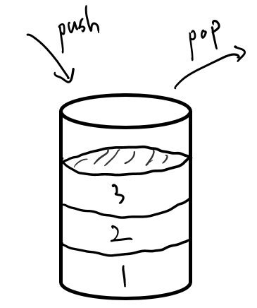
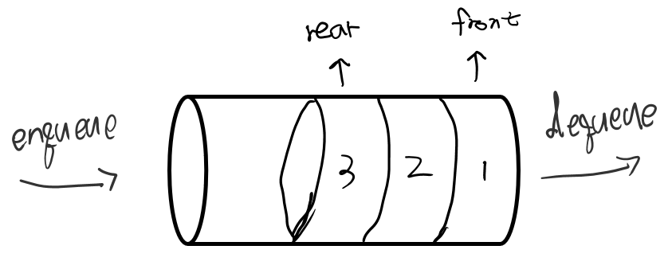

스택(Stack)과 큐(Queue)에 대해 알아보자.
스택과 큐는 자료구조에서 가장 기본적인 자료구조이다. 자료구조를 처음 배울때도 아마 스택과 큐를 가장먼저 배웠던 것 같다. 그만큼 굉장히 쉽고 간단하지만 중요한 자료구조이다.
스택(Stack)
데이터의 출입구가 하나인 자료구조. 아래그림과 같은 통처럼 생긴 자료구조라고 생각하면 쉬울것같다.

출입구가 하나이므로 1. 가장 먼저 넣은 데이터가 가장 아래에 쌓이게 되고 2. 가장 위에 있는 데이터만 꺼낼 수 있다. 위의 1, 2번의 특성을 LIFO(Last In First Out) 혹은 선입후출 이라고 부른다.
마지막에 들어간 데이터가 가장 먼저 나온다는 뜻이다.
스택의 연산: Push , Pop, Peek
push
스택 자료구조에 데이터를 삽입하는 행위를 push 라고한다.
1
2
3
stack = [1, 2, 3]
data = stack.push(4)
print("stack = ", stack) # stack = [1, 2, 3, 4]
pop
스택 자료구조에서 가장 위에 존재하는 데이터를 뽑아내는 연산을 pop이라고 한다. pop연산을 해주면 가장 위에있던 데이터는 스택에서 사라지게된다.
1
2
3
stack = [1, 2, 3]
data = stack.pop() # 3
print("stack = ", stack) # stack = [1, 2]
peek (혹은 top)
pop연산을 해주게되면 상위에있던 데이터가 스택에서 사라지게된다. 상위에있는 데이터를 조회만 하고 싶을때는 pop연산은 적절하지 않다. 이처럼 상위데이터를 조회해주는 연산이 peek이다.
1
2
3
stack = [1, 2, 3]
data = stack.top()
print("stack=", stack) # [1, 2, 3]
자료구조 in python
1. 배열로 구현
1
2
3
4
5
6
7
8
9
10
11
12
13
14
15
16
17
18
19
class Stack(list):
def __init__(self):
self.stack = []
def push(self, data):
self.stack.append(data)
def pop(self):
if !self.is_empty(): # 스택이 비어있지않다면
return self.stack.pop()
return
def peek(self):
return self.stack[-1]
def is_empty(self):
if len(self.stack) == 0:
return True
return False
2. 연결리스트로 구현
1
2
3
4
5
6
7
8
9
10
11
12
13
14
15
16
17
18
19
20
21
22
23
24
25
26
27
28
29
30
class Node:
def __init__(self, data):
self.data = data
self.next = None
class Stack:
def __init__(self):
self.latest = None
def push(self, data):
new_node = Node(data)
new_node.next = self.latest
self.latest = new_node
def pop(self):
if !self.is_empty():
data = self.latest.data
self.latest = self.latest.next
return data
return
def is_empty(self):
if self.latest == None:
return True
return False
def peek(self):
if !self.is_empty():
return self.latest.data
return
위처럼 두가지 방법으로 구현할 수 있다. 근데 나같은 경우 알고리즘 문제를 풀거나 간단한 코드를 짤때 그냥 배열만 선언해주어 배열에서 스택을 구현하는데 대충 아래 코드와 비슷하게 한다.
1
2
3
4
5
6
7
8
9
10
11
12
13
stack = []
# push
stack.append(1)
stack.append(2)
stack.append(3)
# stack = [1, 2, 3]
# peek
data = stack[-1] # data = 3 / stack = [1, 2, 3]
#pop
data = stack.pop() # data = 3 / stack = [1, 2]
큐(Queue)
큐 자료구조는 출구와 입구가 각각 하나 존재하는 자료구조이다. 위 아래가 뚫려있는 원통을 생각하면 쉽다.
여기서 가장 먼저들어온(출구에 가까운) 데이터의 위치를 front라 칭하고 가장 나중에 들어온 데이터의 위치를 rear라 칭한다.

출입구가 하나씩 존재하고 통로가 하나이므로 먼저들어간 데이터가 먼저 나올 수 밖에없다.
이러한 특성을 선입선출, FIFO(First In First Out)이라 한다.
먼저 대기열에 들어온 task를 먼저 처리하는 방식의 작업에 쓰일 수 있다.
번호표를 뽑거나 줄을 서서 기다리는 구조를 Queue라고 볼 수 있다!
큐의 연산: Enqueue, Dequeue …
Enqueue
큐 자료구조에 데이터를 삽입하는 행위를 Enqueue, put이라고 한다.
1
2
3
4
5
6
from queue import Queue
que = Queue()
que.put(1)
que.put(2)
# que: [1, 2]
Dequeue
큐 자료구조에서 front자리에 위치한 데이터를 꺼내는 행위를 Dequeue, get이라고 한다.
1
2
3
4
5
6
7
8
9
from queue import Queue
que = Queue()
que.put(1)
que.put(2)
# que: [1, 2]
data = que.get()
# data = 1 / que = [2]
Queue in python
파이썬에서 큐는 1. 배열로 구현하거나 2. Queue 모듈을 불러와서 사용한다.
1. 배열로 구현
1
2
3
4
5
6
7
8
9
10
11
12
13
que = []
# enqueue
que.append(1)
que.append(2)
que.append(3)
# get front
data = que[0] # data: 1 / que: [1, 2, 3]
# dequeue
data = que.pop(0) # data: 1 / que: [2, 3]
2. Queue 모듈
1
2
3
4
5
6
7
8
9
10
11
12
13
from queue import Queue
que = Queue()
# enqueue
que.put(1)
que.put(2)
que.put(3)
# dequeue
data = que.get() # data: 1 / que: [2, 3]
# get queue size
size = que.qsize()
여러가지 큐
큐는 스택과 다르게 여러가지 종류가 있다.
일반적인 큐의 단점을 보완한 원형큐 라던지, 큐에 저장된 순서와는 상관없이 우선순위에 따라 데이터 저장 위치가 달라지는 Priority Queue 등이 존재한다.
이러한 큐들은 다음에 따로 다루겠다.